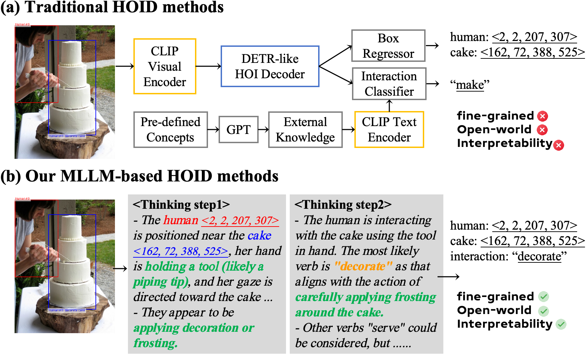
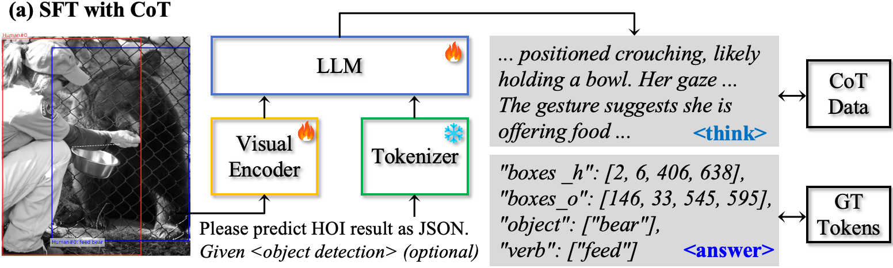
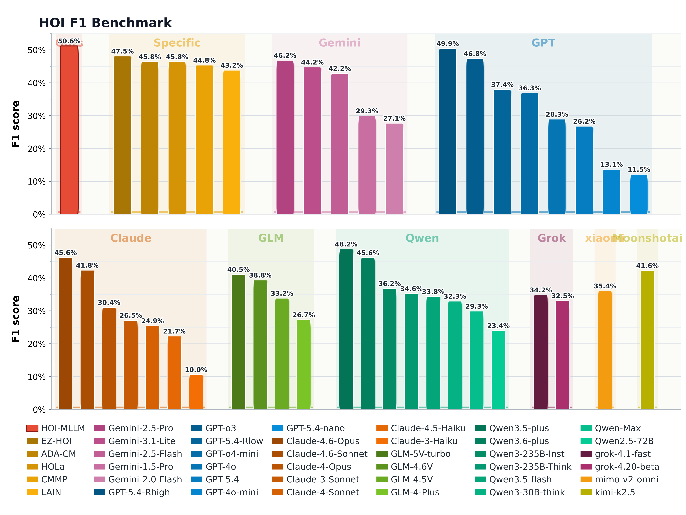
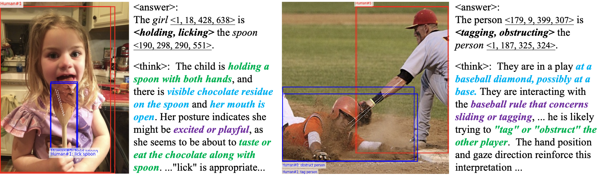

Towards Open-World Human-Object Interaction Reasoning with Multimodal Large Language Model
Department of Electronic Engineering, Tsinghua University
A reasoning-first HOI detector that produces structured predictions and human-readable instance-level explanations.
Background photo: Brooke Lark / Unsplash
HOI-MLLM formulates human-object interaction detection as structured multimodal reasoning, enabling open-vocabulary predictions, instance-level chain-of-thought explanations, and strong HOI detection performance.
Overview
Abstract
Human-Object Interaction (HOI) detection extends conventional object detection by reasoning about higher-level semantic relationships between humans and objects. Most existing HOI detectors are built on DETR-style architectures and rely on external knowledge from large language models or vision-language models. However, they still face insufficient semantic understanding, restricted open-world knowledge, and weak interpretability.
We propose HOI-MLLM, a framework for HOI detection that leverages the reasoning capability of multimodal large language models. We construct balanced supervised fine-tuning data with curated chain-of-thought annotations, and adopt a two-stage training strategy that combines SFT warm-up with GRPO-based post-training guided by HOI-specific reward functions. Experiments on V-COCO and HICO-DET demonstrate state-of-the-art performance while producing interpretable reasoning chains.
Motivation
From Closed-Set Prediction to HOI Reasoning

Method
Structured Reasoning with MLLMs
Balanced HOI Data
Curate a smaller but balanced training set from long-tailed HOI benchmarks, prioritizing rare interactions at the instance level.
Structured Output
Generate parseable HOI results containing human boxes, object boxes, object classes, and interactions.
Chain-of-Thought
Supervise reflection, visual cue mining, interaction reasoning, and final structured HOI output.
GRPO Rewards
Optimize image-level format and interaction rewards together with instance-level pairing and F1 rewards.

Results
Strong HOI Detection and Reasoning Performance
| Benchmark | Setting | Method | mF1 | mPrec | mRec | Takeaway |
|---|---|---|---|---|---|---|
| V-COCO | R50-DETR | HOI-MLLM | 69.28 | 74.44 | 65.56 | Best mF1 and strongest precision. |
| V-COCO | R50-DETR | EZ-HOI† | 68.42 | 62.56 | 77.68 | Strong recall baseline. |
| V-COCO | Oracle | HOI-MLLM | 81.94 | 85.32 | 79.35 | SOTA interaction reasoning. |
| V-COCO | Oracle | EZ-HOI† | 81.02 | 78.91 | 84.84 | Closest traditional baseline. |
| HICO-DET | Oracle | HOI-MLLM | 50.61 | 51.16 | 49.90 | SOTA with +3.09 mF1 over EZ-HOI†. |
| HICO-DET | Oracle | EZ-HOI† | 47.52 | 43.81 | 48.62 | Prior best baseline. |
| Variant | SFT | Mixed | CoT | GRPO | mF1 | mPrec | mRec |
|---|---|---|---|---|---|---|---|
| A1 | - | - | - | - | 31.31 | 41.92 | 27.46 |
| A2 | yes | - | - | - | 64.07 | 71.00 | 59.46 |
| A4 | yes | yes | yes | - | 68.10 | 73.85 | 63.71 |
| A5 | yes | yes | yes | yes | 69.28 | 74.44 | 65.56 |
Benchmark View
HOI F1 Benchmark Across MLLM Families
HOI-MLLM achieves the strongest F1 score among specialized HOI methods and general-purpose MLLMs, with a compact comparison grouped by model family.
Open high-resolution PDF
Qualitative Analysis
Open-World, Fine-Grained, Instance-Level Explanations

Reference
Citation
@inproceedings{wu2026hoi_mllm,
title = {Towards Open-World Human-Object Interaction Reasoning with Multimodal Large Language Model},
author = {Wu, Eastman Z. Y. and Li, Yali and Wang, Shengjin},
booktitle = {ICASSP 2026 - IEEE International Conference on Acoustics, Speech and Signal Processing},
year = {2026}
}